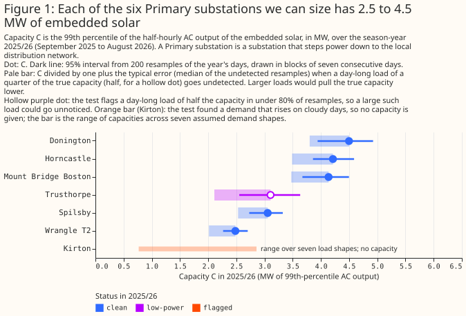
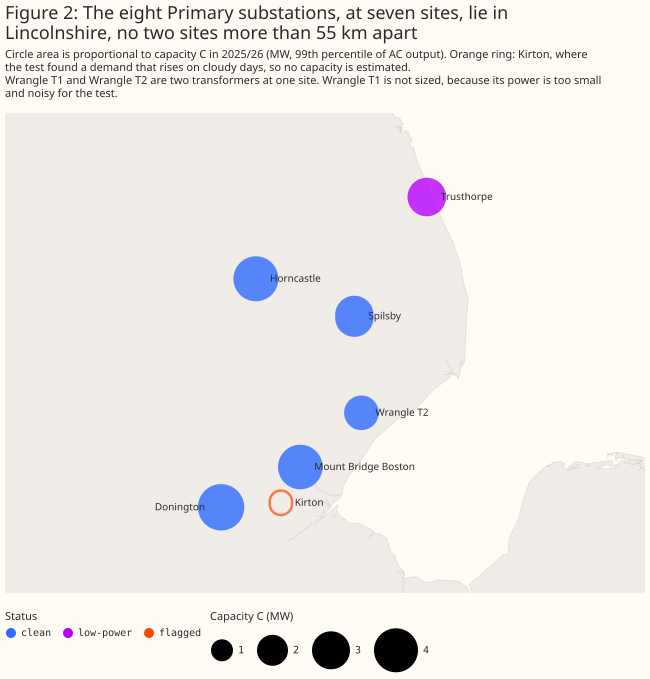
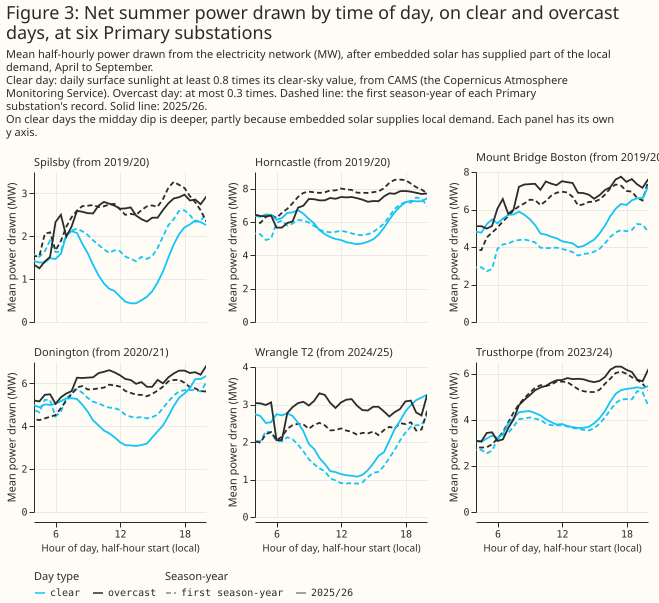
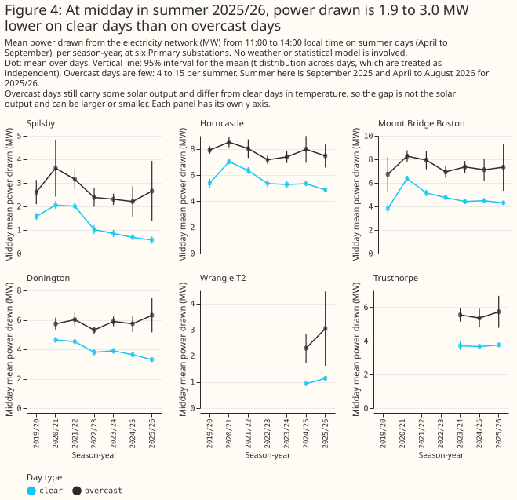
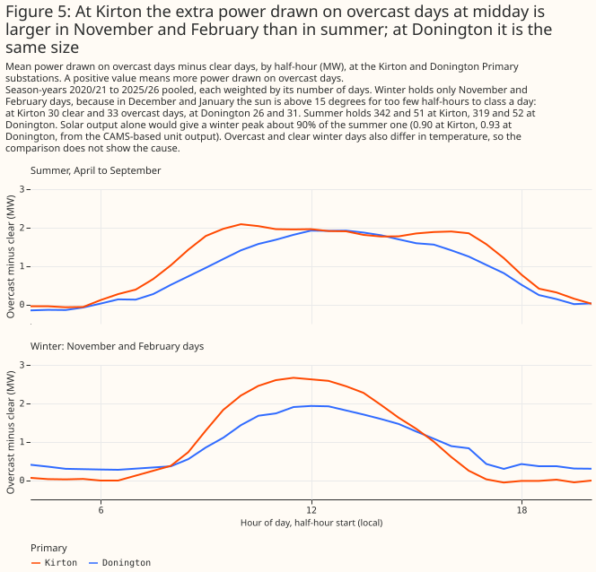
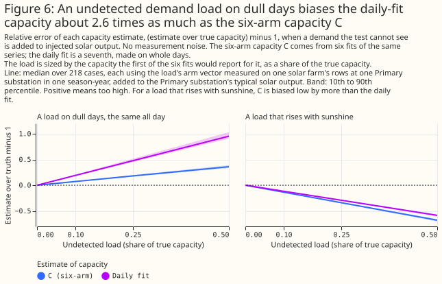
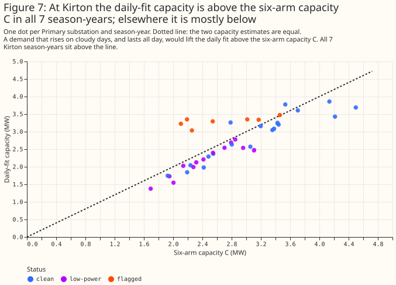
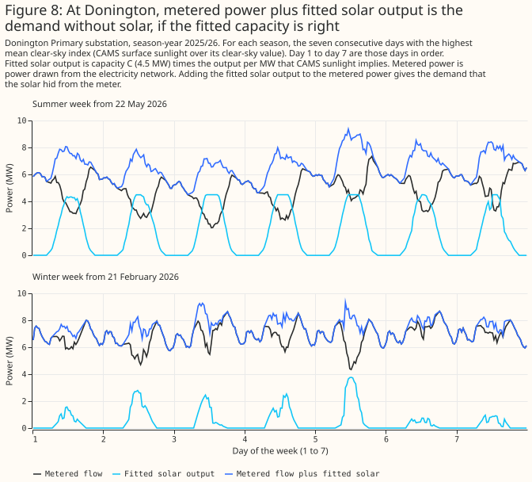
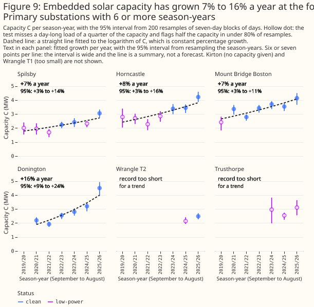

Embedded solar behind six Lincolnshire Primary substations is about 2.5 to 4.5 MW each, and grew 7% to 16% a year at four of them
Bottom line: in the season-year 2025/26, the embedded solar behind six of the eight Primary substations metered in signed megawatts in our trial area has a capacity of about 2.5 to 4.5 MW each. The 95% sampling interval of each capacity (the range that resampling the days gives) extends about 8% to 18% below that capacity and 9% to 17% above that capacity. At the four Primary substations with 6 or more season-years of data, the capacity grew by 7% to 16% a year. The page reports three errors separately. The first is the sampling noise in the days used. The second is the transfer error: the panels behind each Primary substation may not behave like the six solar farms we calibrated on. The third is undetected demand: a demand that is higher on overcast days would make the capacity too high, and our test may miss it. The second and third errors can exceed the sampling interval. At Trusthorpe the test has little power to detect such a demand. An undetected day-long demand of half the capacity would leave Trusthorpe's capacity about 47% too high, so its capacity is the least certain of the six.
The page uses these terms.
- Primary substation. A substation that steps power down to the local distribution network.
- Season-year. September to August, named by its September: 2025/26 is September 2025 to August 2026.
- Embedded solar. Solar panels, rooftop and ground-mounted, connected to the local distribution network below a Primary substation. National Grid Electricity Distribution (NGED) does not meter them. They lower the power the Primary substation draws from the network on sunny days.
- Capacity C. The 99th percentile, over the daylight half-hours of a season-year, of the half-hourly AC output of all embedded solar below a Primary substation, in MW. We infer C from demand and from CAMS irradiance (the Copernicus Atmosphere Monitoring Service's satellite estimate of sunlight), assuming that the embedded solar has the same output shape as six metered solar farms in Lincolnshire. C is usually smaller than the installed DC capacity.
- Cloud-driven demand. Demand that is higher on overcast days, such as heating and lighting. It looks like lost solar output, so it makes the fitted capacity too high.
- The test, and a flagged season-year. The test fits the embedded-solar capacity to one Primary substation's demand in six different ways. Each way allows a different amount of cloud-driven demand, so the six capacities disagree when cloud-driven demand is present. A season-year is flagged when the six capacities disagree by more than they do when the same fits are applied to solar-farm output added to that Primary substation's demand. Cloud-driven demand makes them disagree. So would a solar fleet whose output shape differs from the six solar farms.
- Status. Each season-year has one of three statuses.
clean: in simulations that add a known day-long cloud-driven demand to the data, the test flags a demand of half the capacity in at least 80% of trials.low-power: the test flags such a demand in fewer than 80% of trials.flagged: the six capacities disagree, so no capacity is given. Acleanseason-year is not free of cloud-driven demand: the test still misses a day-long demand of a quarter of the capacity in 39% to 75% of trials.

The table gives each Primary substation's capacity C in 2025/26 with three error measures. The sampling interval covers noise from the days used. The bound B is the median relative error of C over simulated trials in which the test missed a day-long cloud-driven demand, at the strength in brackets (a multiple of the true capacity). B is neither a worst case nor a floor. The daily fit divided by C is the ratio of a seventh capacity estimate, made on whole days, to C. The full table, one row per Primary substation and season-year, is in a CSV file. Wrangle T1 is left out, because the test has almost no detection power there (at most 6% at a quarter of the capacity).
| Primary substation | Status | Capacity C (MW) | 95% interval (MW) | Bound B (strength) | Daily fit divided by C |
|---|---|---|---|---|---|
| Donington | clean | 4.50 | 3.94 to 4.92 | 0.18 (0.25) | 0.82 |
| Horncastle | clean | 4.21 | 3.86 to 4.59 | 0.21 (0.25) | 0.81 |
| Mount Bridge Boston | clean | 4.14 | 3.67 to 4.50 | 0.19 (0.25) | 0.93 |
| Trusthorpe | low-power | 3.11 | 2.55 to 3.63 | 0.47 (0.5) | 0.80 |
| Spilsby | clean | 3.06 | 2.73 to 3.32 | 0.21 (0.25) | 0.84 |
| Wrangle T2 | clean | 2.48 | 2.26 to 2.70 | 0.23 (0.25) | 0.92 |
| Kirton | flagged | none | range 0.8 to 2.9 | not given | 1.53 |
How much solar sits behind each Primary substation? We can estimate a capacity for six of the eight Primary substations, and not for Kirton or Wrangle T1.
- Six Primary substations have a capacity, and their 2025/26 values fall in two tiers: about 4 to 4.5 MW at Donington, Horncastle, and Mount Bridge Boston, and about 2.5 to 3 MW at Spilsby, Trusthorpe, and Wrangle T2. Within a tier the sampling intervals overlap.
- Kirton has no capacity. The test flagged 6 of Kirton's 7 season-years, and we cannot say whether a cloud-driven demand or an unusual solar fleet caused the flags. We give only the range of capacities that seven assumed shapes of cloud-driven demand allow, such as a flat load, a low-sun load, and an evening load (0.8 to 2.9 MW in 2025/26).
- Wrangle T1 is left out, as above. The six, Kirton, and Wrangle T1 make the eight Primary substations metered in signed megawatts.
Did the capacity grow? The fitted capacity rose at the four Primary substations with 6 or more season-years.
- The fitted growth is 7.3% a year at Spilsby, 7.8% at Horncastle, 7.4% at Mount Bridge Boston, and 16.1% at Donington (Figure 9).
- The growth rate is a percentage of C. Suppose a load that is not solar, and is the same size in megawatts every year, raises every season-year's C by the same amount. The growth in MW a year would be unchanged, and the percentage rate would be too low. Suppose instead a load that grows faster than the solar fleet raises C. The percentage rate would then be too high. This page tests neither case.
Can the estimates be used for forecasting? We do not recommend it yet.
- In experiment 00031, embedded-solar capacity estimates (trailing 28-day statistics and products built on the Embedded Capacity Register) did not lower the forecast error averaged over all forecast lead times. The Embedded Capacity Register is the list of larger generators connected to the distribution network. The verdict of experiment 00031 was inconclusive. This table's capacities have not been tested as a forecast input.
- The capacity estimates are useful for explaining past demand and for sorting Primary substations into tiers by embedded solar.
What are the limits of the table? The table rests on one trial area, six solar farms, and one source of irradiance estimates (CAMS). The table gives no figure for a Primary substation outside the trial area. The table also cannot be independent of the six solar farms, because every capacity is scaled by ratios measured on them (see Limitations).
How this page was made. The research question came from a human. Everything else — the code behind every result, the analysis, the figures, and the text — was written by Claude, Anthropic's AI model (for this page, Claude Sonnet 5.5). Independent Claude reviewers have checked the method, the evidence, and the prose adversarially.
Key findings
- The daily fit is above C at Kirton in all 7 season-years, and below C in 30 of the 32 season-years of the other Primary substations that have a capacity. No solar farm's injected output gives a daily fit that low (Figure 7).
- An undetected load on dull days would bias the daily fit about 2.6 times as much as C. For that reason the page uses C as the capacity (Figure 6).
- In summer 2025/26 midday power drawn is 1.9 to 3.0 MW lower on clear days than on overcast days, at six Primary substations. Each gap rests on 4 or 5 overcast days, and solar output alone would give a gap of similar size (Figure 4).
- At Kirton the midday power drawn on overcast days exceeds clear days by more in November and February than in summer. At Donington the two are the same size, and solar output alone would give a smaller winter gap at both (Figure 5).
Introduction
NGED meters its Primary substations but not the solar panels behind them. This study asks three questions. How many megawatts of solar sit behind each Primary substation? How did that capacity change from 2019/20 to 2025/26? How far can each capacity be trusted?
This page builds a table from two earlier experiments, with no new fitting. Experiment 00039 fitted embedded-solar capacity to the demand of the Primary substations, using CAMS irradiance (the Copernicus Atmosphere Monitoring Service's satellite estimate of sunlight), and checked the fit on solar-farm output added to demand. Experiment 00040 built the test that compares six fits, and attached an error bar to the capacity where the test finds no cloud-driven demand.
Data and methods
Primary substations. The eight Primary substations metered in signed megawatts are in the table, because solar output above local demand shows as negative flow there. Eight further Primary substations are metered in megavolt-amperes, which folds that negative flow into positive demand, so they are left out (experiment 00039).
Six fits and a daily fit. Each fit regresses a Primary substation's half-hourly power on temperature, calendar terms, and CAMS-based solar output. The six fits differ in how much cloud-driven demand each allows. Each fit is first applied to solar-farm output added to demand, where the true capacity is known. That gives each fit a recovery ratio: the capacity the fit returns divided by the true capacity. When the demand has no cloud-driven component, each fit's capacity equals its recovery ratio times the true capacity. A cloud-driven demand breaks this proportionality. The misfit T measures how far the six capacities depart from it. We take C as the capacity that makes the six fits agree best with their recovery ratios. The daily fit is a seventh fit, made on whole days. The solar farms are labelled A to F in the experiments, and none is drawn here.
The test and its flag. A season-year is flagged when T exceeds the 95th percentile of T on solar-farm output added to the same Primary substation's demand. A Primary substation is flagged when more than half its season-years are flagged. Every season-year of a flagged Primary substation is flagged, because an unflagged year there is more likely a missed detection than a clean year. The rule that flags every season-year of a flagged Primary substation was fixed after the table of experiment 00040 was seen. The rule withholds one capacity, Kirton's 2020/21.
Intervals and the bound. The 95% sampling interval of C is the 2.5th and 97.5th percentiles of C
over 200 resamples of the year's days in blocks of seven consecutive days. The interval holds the
recovery ratios fixed and ignores undetected loads, so it covers sampling noise in the days only.
The bound B is the median relative error of C over the simulated trials in which the test missed a
day-long cloud-driven demand of a given strength. We test four strengths of undetected demand: 0.1,
0.25, 0.5, and 1 times the true capacity. The strength used for B is the largest of the four that
the test misses in more than 20% of trials (bound_amplitude in the CSV file). A missed day-long
cloud-driven demand makes C too high. B is neither a worst case nor a floor: a missed demand between
two grid strengths, or a larger demand, gives a larger error. The detection power of the test at a
strength is the share of trials it flags. For a clean season-year the test flags a strength of 0.5
in at least 80% of trials and misses a strength of 0.25 (detection power 0.25 to 0.61 at 0.25). The
median error of C at 0.25 is then 0.17 to 0.23. A low-power season-year also misses a strength of
0.5, so the bound is read at 0.5 or 1.
Planned and exploratory numbers. Four checks were written in the plan before any output existed. First, this page's C, flags, and bound reproduce experiment 00040's stored scores, and they do exactly. Second, C is the headline capacity and the daily fit is a cross-check. Third, growth rates are fitted per Primary substation with at least 6 season-years. Fourth, Kirton gets no capacity. Every number not listed here was chosen after the results were seen, and is exploratory. The page runs no significance test and makes no correction for multiple comparisons.
Results
The Primary substations lie within 55 km of each other
The eight Primary substations lie in one trial area, 54.7 km across at the widest. Kirton and Donington are neighbours, and Wrangle T1 and Wrangle T2 are two transformers at one site.

The clear-day dip is visible without a model
At Spilsby the clear-day midday power drawn fell from 1.58 MW in 2019/20 to 0.58 MW in 2025/26. At Donington it fell from 4.65 MW in 2020/21 to 3.29 MW in 2025/26. A clear day has CAMS irradiance of at least 0.8 times its clear-sky value, and an overcast day at most 0.3 times. The other four Primary substations have shorter records or a smaller change, so the dip is not deeper at every one.

In summer 2025/26 the midday power drawn is 1.9 to 3.0 MW lower on clear days than on overcast days, at six Primary substations. Overcast days still carry some solar output and differ in temperature, so the gap is not the solar output. It can be larger or smaller. The fitted capacity gives a solar-only gap (capacity times the CAMS-based unit output, clear minus overcast) of 3.25 MW at Donington against the measured 3.02 MW, and of 1.82 to 3.17 MW at the other five against the measured 1.90 to 3.02 MW. Each measured gap rests on 4 or 5 overcast days, and its 95% interval is about plus or minus 0.9 to 2.0 MW. At Donington the gap rose from 1.09 MW in 2020/21 to 3.02 MW in 2025/26, and at Spilsby from 1.03 MW in 2019/20 to 2.08 MW in 2025/26. At Horncastle and Mount Bridge Boston it was 2.5 and 2.9 MW in 2019/20 and 2.6 and 3.0 MW in 2025/26.

Kirton's overcast-day excess is larger in winter
At Kirton the midday power drawn is higher on overcast days than on clear days by 2.67 MW at most in November and February and 2.09 MW at most in summer. At Donington the figures are 1.93 MW and 1.92 MW. The CAMS-based unit output gives a winter peak gap about 90% of the summer one (0.90 at Kirton and 0.93 at Donington), so solar alone would give a smaller winter gap at both. The winter-over-summer ratio of the measured gap is 1.28 at Kirton and 1.01 at Donington. Both exceed the solar-only ratio, and Kirton exceeds it by more. The comparison has no interval on either peak. Winter holds only November and February days, because in December and January the sun is above 15 degrees for too few half-hours to class a day. Kirton has 30 clear and 33 overcast winter days in the pool, and Donington has 26 and 31. Overcast and clear winter days also differ in temperature, so the comparison does not show the cause.

An undetected load biases the estimates
An undetected load that is the same on every daylight half-hour of a dull day, at 25% of the true capacity, makes C 18% too high and the daily fit 48% too high. A load that rises with sunshine does the opposite, making C 34% too low and the daily fit 29% too low. The test misses both kinds of load. The error sizes are medians over 218 cases, each a load measured on one solar farm's rows at one Primary substation in one season-year, with no sampling noise. Noise widens the spread of the error around these medians. For a load that rises with sunshine, C is biased by more than the daily fit.

The daily fit is above C at Kirton and below it elsewhere
At Kirton the daily fit divided by C has a median of 1.30 and exceeds 1 in all 7 season-years. At the clean and low-power Primary substations the median is 0.92 (10th to 90th percentile 0.81 to 0.98 over 32 season-years), and the ratio exceeds 1 in only 2. On injected solar-farm output the ratio is 1.00 (10th to 90th percentile 0.94 to 1.08, noise-free), and only 5.5% of those cases fall below 0.92. An undetected day-long load of a quarter of the capacity raises the ratio to about 1.25, and a load that rises with sunshine raises it to about 1.07. The 0.92 is therefore below every farm's median (0.96 to 1.14), so the panels behind the clean Primary substations do not behave like the six farms. The size of that difference is unknown, so the ratio cannot rule out a day-long cloud-driven demand. This check was made after the table of experiment 00040 was seen, so it is post hoc.

At Donington, adding the fitted solar to metered power gives more midday demand than evening demand
In Donington's clearest summer week, metered power plus the fitted solar output averages 7.8 MW from 11:00 to 14:00 and 6.5 MW from 19:00 to 22:00. The week is the seven consecutive days with the highest mean clear-sky index (CAMS irradiance over its clear-sky value), starting on 22 May 2026. If the fitted capacity of 4.5 MW is right, demand at Donington is higher at midday than in the evening. If the capacity is too high, metered power plus fitted solar output shows an artificial midday bump. Figure 8 cannot show which of these two explanations is correct.

The capacity grew 7% to 16% a year at four Primary substations
A straight line fitted to the logarithm of C against season-year gives 7.3% a year at Spilsby, 7.8% at Horncastle, 7.4% at Mount Bridge Boston, and 16.1% at Donington. Spilsby, Horncastle, and Mount Bridge Boston have 7 season-years of data, and Donington has 6. The 95% interval from resampling season-years is 3.1% to 14.1% at Spilsby, 3.2% to 16.1% at Horncastle, 2.8% to 10.7% at Mount Bridge Boston, and 8.5% to 23.7% at Donington. With six or seven points that bootstrap interval is optimistic: a t interval on the fitted slope gives 1.1% to 13.8% at Spilsby, 1.3% to 14.8% at Horncastle, 2.1% to 13.0% at Mount Bridge Boston, and 6.9% to 26.0% at Donington. An interval from the bootstrap draws alone holds the sampling noise only, and is narrower: 4.1% to 11.0% at Spilsby and 13.7% to 19.4% at Donington. The daily fit gives 8.6%, 6.0%, 8.2%, and 16.5%, so the choice of estimator moves a rate by at most 2 points.
The percentage rate depends on any hidden load, and Donington's rate rests on one jump. The fitted growth in MW a year is 0.17 at Spilsby, 0.24 at Horncastle, 0.23 at Mount Bridge Boston, and 0.45 at Donington. A hidden load of fixed size in megawatts leaves those unchanged. Removing a fixed load that raises the mean capacity by 18% raises the percentage rates to 8.9%, 9.6%, 9.3%, and 20.0%. Donington's capacity rose from 3.2 to 4.5 MW in the last season-year, and without that year the rate is 12.0%. Low-power season-years are in every fit. The status of a season-year flips between clean and low-power as the power estimate changes (Spilsby's 2021/22 is low-power and its 2022/23 is clean), so hollow dots alternate along one trend. The fitted line is a summary and not a forecast.

Discussion: what to use
Use the table to explain past demand and to sort Primary substations into two tiers of embedded solar. The tiers are about 4 to 4.5 MW (Donington, Horncastle, Mount Bridge Boston) and about 2.5 to 3 MW (Spilsby, Trusthorpe, Wrangle T2). Within a tier the intervals overlap. For growth, only Donington's rate differs clearly from the other three. If a Primary substation's capacity matters to a decision, quote its three errors and not one combined interval.
Do not use the table as a forecast input yet. Experiment 00031 tested other capacity estimates and was inconclusive, and this table's capacities have not been tested as an input.
Three errors apply, and the page does not combine them into one interval.
- Sampling. In 2025/26 the 95% sampling interval of C extends 8% to 18% below it and 9% to 17% above it. Across all 32 clean and low-power season-years the half-width over C has a median of 10%, with a 10th to 90th percentile of 8% to 21%.
- Transfer from solar farms to the panels behind each Primary substation. The recovery ratios come from six metered solar farms. The ratio of C to the known injected farm output has a median of 0.99, with a 10th to 90th percentile of 0.84 to 1.10. One farm's median is 0.83 and the others' are 0.96 to 1.05. This spread is a lower limit on the transfer error, because a mixed fleet of rooftop panels has more orientations than six farms. The daily fit over C of 0.92 at the clean Primary substations, below every farm's median, shows that the fleets differ from the farms by an amount these data cannot size. A transfer error common to all the fleets would move every capacity in the same direction, so the tiers are more reliable than the megawatts.
- Undetected demand. The bound B on C is 0.18 to 0.23 at the five clean Primary substations in 2025/26 and 0.47 at Trusthorpe. A load that rises with sunshine would make C too low, by 14% at a strength of 0.1 and 34% at 0.25. These data cannot measure the size of either a day-long cloud-driven demand or a load that rises with sunshine.
A comparison with outside statistics would test the table against an independent source. The government's sub-regional statistics of small-scale solar list capacity by area, and the Embedded Capacity Register lists the larger sites. Either comparison would need each Primary substation's service area from NGED.
Proposed follow-up study
Compare the capacities with the government's sub-regional statistics of small-scale solar, by each Primary substation's service area, and use the Embedded Capacity Register to list the larger solar sites below each Primary substation. This study produced a table whose three errors are all stated. An outside source could test the transfer from farms to the panels behind each Primary substation, and could give a starting estimate for Kirton. The comparison would need NGED's service areas for each Primary substation, and no download. The case against: the register holds mainly sites of 50 kW and more, at their AC export capacity, so on its own it misses most rooftop panels. The small-scale statistics are DC, and our capacity is a 99th percentile of AC output over daylight half-hours, so that comparison needs a DC-to-AC conversion that adds its own error.
Limitations
- The panels behind each Primary substation are assumed to have the output shape of the six solar farms. The recovery ratios come from six solar farms in Lincolnshire. The estimate moves with the fleet's orientation mix, which none of these data measure.
- C includes any ground-mounted solar farm connected below a Primary substation. We did not check which Primary substations have one.
- One trial area and one irradiance product. CAMS irradiance drives every fit.
- The capacity is a 99th percentile of half-hourly AC output over daylight half-hours, not the installed DC capacity, which is larger.
- Detection power is low for a day-long load, even at a clean Primary substation. In experiment 00040 the test flagged such a load at 25% of the true capacity in 35% of simulated trials (median over the eight Primary substations). In this table the detection power at that strength is 37% to 49% at the five clean Primary substations in 2025/26, and 21% at Trusthorpe.
- Wrangle T1 and Wrangle T2 are two transformers at one site, and their midday flows changed between 2024/25 and 2025/26. Solar or load may have moved between them, so Wrangle T2's capacity is that transformer's share.
- Kirton, Wrangle T1, and the Primary substations metered in megavolt-amperes are left out, for the reasons above.
- The status rules and the flagged-Primary rule are post hoc. Their thresholds were fixed after the table of experiment 00040 was seen.
- The table rests on the stored fits of experiment 00040. This page refits nothing, so every flaw of those fits carries over.
- The overcast-day figures use few days. Each Primary substation has 4 to 15 overcast summer days a season-year.
Scope
The page covers the eight Primary substations metered in signed megawatts in the trial area, from 2019/20 to 2025/26. It says nothing about other Primary substations, battery storage, or weather products other than CAMS irradiance.
Data and code availability
The stored fit results and the CAMS-based table come from experiments 00039 and 00040, whose inputs
are NGED's private telemetry and the public CAMS irradiance. The study code is in
studies/embedded_pv_capacity/,
and the shared test is in packages/studies/src/studies/pv_capacity_misfit.py. No solar farm is
named or drawn. The code is at the commit of the pull request that merged this page.
Reproducing the figures
export POLARS_MAX_THREADS=2 OMP_NUM_THREADS=2 OPENBLAS_NUM_THREADS=2
uv run python studies/embedded_pv_capacity/build_capacity_table.py
uv run python studies/embedded_pv_capacity/build_raw_gaps.py
uv run python studies/embedded_pv_capacity/capacity_charts.py
The scripts print every number on this page into report.md and raw_gaps_report.md in
data/studies/per_study/embedded_pv_capacity/.